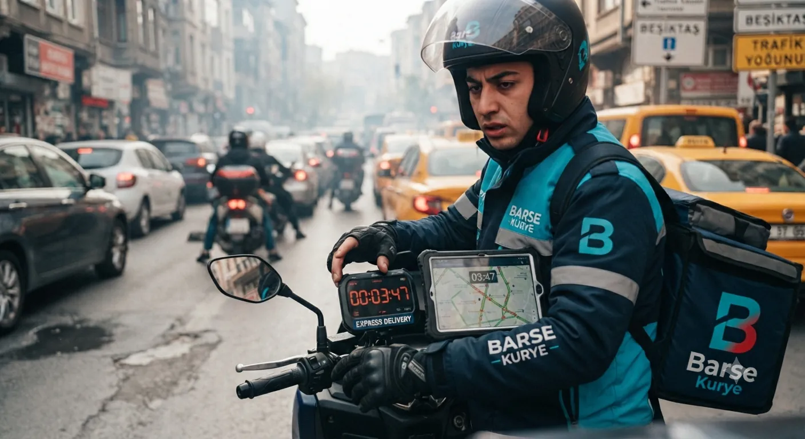

★★★★★ Google yorumu
“Eski müşterisiyim, acil dediğim an kapımda.”
What Sap · Ağustos 2026
Bekleyemeyen gönderiler için Express ve VIP kurye. Kurye başka adrese uğramadan doğrudan teslimata gider.

Acil kurye, gönderiyi başka hiçbir işle birleştirmeden alıp doğrudan teslim eden motorlu kuryedir. Normal kuryede kurye gün içinde birkaç işi sıraya dizer; acilde sıra yoktur, gönderi tek başına yola çıkar.
Fark hızda değil sadece — öngörülebilirlikte. Normal teslimatta "bugün içinde" denir, acilde "şu saatte orada" denir. Adliyeye yetişecek bir dosyada ya da imza bekleyen bir sözleşmede aradaki fark işin olması ile olmaması demek.
Ekspres kurye, gönderinizi başka paketlerle birleştirmeden öncelikli olarak taşır. Teslimat çoğunlukla 45–75 dakikada tamamlanır.
VIP kurye ise gönderinize özel atanır. Kurye yol boyunca hiçbir adrese uğramaz, doğrudan teslimata gider. Süre 30–60 dakikaya iner.
İkisinin de ücreti mesafeye göre değişiyor. Kesin tutarı fiyat hesaplama sayfasından görebilir ya da adresleri WhatsApp'tan yazıp öğrenebilirsiniz — sipariş öncesi bildiriyoruz.
1. Yazıyorsunuz. Nereden, nereye, kaça kadar yetişmeli. Üçü bir mesajda olsun — soru-cevapla geçen her dakika teslimattan gidiyor.
2. Süreyi ve ücreti söylüyoruz. Adresleri gördüğümüz anda ikisini birden yazıyoruz. Yetişmeyecekse "yetişmez" deriz; olmayacak söz vermiyoruz.
3. Kurye hemen çıkıyor. Onay verdiğiniz anda. Yükleme, aktarma, depo yok.
4. Doğrudan gidiyor. Yolda başka adres, başka paket olmuyor.
5. Teslim bilgisi. Kimin aldığını iletiyoruz, isterseniz teslim anında fotoğraf gönderiyoruz.
Süreli evrak teslimi, ihale dosyası, imza gerektiren sözleşme, acil ilaç, üretimi durduran yedek parça ve gün içinde yetişmesi gereken numune gönderileri en sık karşılaştığımız acil talepler.
Adliye ve resmî kurum teslimlerinde saat sınırı olduğu için bu işlerde VIP kurye öneriyoruz.
Dürüst cevap: mesafeye ve saate bağlı. "Her yere 30 dakika" diyen varsa doğru söylemiyor. İstanbul'da gerçekte olan şu:
Aynı ilçe içinde ya da komşu ilçeye — genelde en kısa süre. Kurye zaten yakındaysa yola çıkması bile dakikalar alıyor.
Aynı yakada uzak ilçeye — süre uzuyor ama tahmin edilebilir kalıyor. Bu mesafede ekspres genelde yetiyor.
Yakadan yakaya (köprü geçişi) — en uzun süren gönderi tipi. Köprü ve bağlantı yolları yoğunsa VIP öneriyoruz, çünkü kuryenin başka işle oyalanmaması burada gerçekten fark yaratıyor.
Yoğun saatler: sabah 08:00–10:00 ve akşam 17:00–20:00. Bu aralıkta aynı mesafe belirgin şekilde uzuyor. Gönderiniz bu saatlere denk geliyorsa ve kesin bir saate yetişmesi gerekiyorsa bunu baştan söyleyin — planı ona göre kuruyoruz.
Süre tahminini işi alırken veriyoruz ve tutmayacaksa baştan söylüyoruz. Yetişmeyecek bir işe "yetişir" demek kimsenin işine yaramıyor.
Acil işlerde araçlı kurye çoğu zaman çözüm değil. Sebep basit: tıkanan trafikte araba durur, motor durmaz. Şeritler arasından ilerleyebilmek İstanbul'da yarım saatlik bir farka karşılık geliyor.
İkinci sebep park. Plazaya, hastaneye, adliyeye ya da Perpa gibi kalabalık bir iş merkezine araçla girip yer aramak başlı başına bir iş. Motor kapıya kadar gidiyor.
Motorun sınırı da var, onu da söyleyelim: büyük ve ağır gönderi taşınmıyor. Zarf, dosya, küçük paket, ilaç, numune, yedek parça — bunlar bizim işimiz. Koltuk taşınacaksa yanlış yerdesiniz.
7 gün 24 saat çalışıyoruz. Gece 20:00 – 06:00 arasında tarifeye gece farkı ekleniyor; hafta sonu için de aynı tutarda fark uygulanıyor. Nöbetçi eczane teslimatları gece de yapılıyor.
Süre. Kargo İstanbul içinde bile çoğunlukla ertesi güne kalır; acil kurye saatler içinde teslim eder.
Yol. Kargoda gönderi şubeye, oradan aktarma merkezine, oradan dağıtıma gider — elden ele geçer ve arada bekler. Bizde tek kurye alır, tek kurye teslim eder.
Kapı. Kargoda çoğu zaman şubeye gitmek gerekir. Kurye adresten alır, adrese bırakır.
Bilgi. Kargoda takip numarası vardır ama karşınızda kimse yoktur. Bizde gönderinin nerede olduğunu WhatsApp'tan sorabilirsiniz, cevap veren kişi işi bilen kişi.
Şu dört şey ilk mesajda olursa kurye çok daha hızlı çıkar:
1. Alınacak adres — bina, kat, kime gidileceği. "Şişli'den alınacak" yetmiyor.
2. Teslim adresi — aynı ayrıntıyla.
3. Saat sınırı — "17:00'den önce orada olmalı" gibi. Adliye, noter, resmî kurum gönderilerinde bu en kritik bilgi.
4. Ne taşınacak — zarf mı, kutu mu, kırılır mı, soğuk zincir gerekir mi. İçeriğini söylemeniz gerekmiyor, boyutu ve özel durumu yeterli.
Telefonda anlatmak yerine WhatsApp'tan yazmak genelde daha hızlı oluyor — adresler yazılı kalıyor, kurye yanlış yere gitmiyor.
İstanbul'un 39 ilçesinin tamamına. Kurye Kağıthane merkezli çalıştığı için merkez ilçelere ulaşım kısa; uzak ilçelerde ve yaka geçişlerinde süre uzuyor, bunu işi alırken söylüyoruz.
Avrupa Yakası: Arnavutköy, Avcılar, Bağcılar, Bahçelievler, Bakırköy, Başakşehir, Bayrampaşa, Beşiktaş, Beylikdüzü, Beyoğlu, Büyükçekmece, Çatalca, Esenler, Esenyurt, Eyüpsultan, Fatih, Gaziosmanpaşa, Güngören, Kağıthane, Küçükçekmece, Sarıyer, Silivri, Sultangazi, Şişli, Zeytinburnu.
Anadolu Yakası: Adalar, Ataşehir, Beykoz, Çekmeköy, Kadıköy, Kartal, Maltepe, Pendik, Sancaktepe, Sultanbeyli, Şile, Tuzla, Ümraniye, Üsküdar.
Tüm bölgeler için İstanbul içi kurye, düzenli ve faturalı çalışma için Kurumsal Kurye sayfasına bakabilirsiniz.
“Eski müşterisiyim, acil dediğim an kapımda.”
What Sap · Ağustos 2026
“90 dakikada teslim ettiler, teşekkürler.”
Ares S. · Ağustos 2026
“Hızlı kurye, memnun oldum. Teşekkürler.”
Necdet Ö. · Ağustos 2026
Google İşletme Profilimizde 4,4 ortalama ve 30 yorum var. Buraya birkaçını aldık; tamamını Google'da görebilirsiniz.
Gün içinde teslim edilmesi gereken evrak ve paketler için planlı, en uygun fiyatlı seçenek.
WhatsApp ile sorGönderiniz başka paketlerle birleştirilmez, öncelikli olarak yönlendirilir.
Gönderinize özel kurye atanır; başka adrese uğramadan doğrudan teslimata gider.
WhatsApp ile sorVIP, aynı güzergâhın normal tarifesinin üzerine bir hız farkı ekler; ekspresin farkı daha düşüktür. Güncel tutarı fiyat hesaplama sayfasından görebilir ya da adresleri WhatsApp'tan yazıp öğrenebilirsiniz — kurye yola çıkmadan bildiriyoruz.
Evet, 7/24 hizmet veriyoruz. Gece 20:00–06:00 arasında gece tarifesi farkı uygulanır.
Mesafeye ve saate bağlı. Aynı ilçe içinde en kısa, yakadan yakaya köprü geçişinde en uzun. Ekspres genelde 45-75 dakika, VIP 30-60 dakika. Süre tahminini işi alırken veriyoruz; yetişmeyecekse baştan söylüyoruz.
Normal kuryede gönderi gün içinde başka işlerle sıraya girer. Acilde sıra yoktur — kurye sadece sizin gönderinizi alır ve doğrudan teslim eder.
Kargo İstanbul içinde bile çoğunlukla ertesi güne kalır ve gönderi aktarma merkezlerinde bekler. Acil kuryede tek kişi alır, tek kişi teslim eder, aynı gün içinde biter. Şubeye gitmenize de gerek yok.
Dört şey: alınacak adres, teslim adresi, saat sınırı ve ne taşınacağı. Bu dördü ilk mesajda olursa kurye çok daha hızlı yola çıkar.
Sabah 08:00-10:00 ve akşam 17:00-20:00 arasında aynı mesafe uzuyor. Kesin bir saate yetişmesi gerekiyorsa baştan söyleyin; yetişmeyecekse size yetişmez deriz.
Evet, İstanbul'un 39 ilçesinin tamamına. Köprü geçişli gönderiler en uzun süren tip; bu mesafede VIP kurye öneriyoruz.
Zarf, dosya, küçük paket, ilaç, numune, yedek parça. Motorla taşındığı için büyük ve ağır gönderiler bu hizmetin dışında kalıyor.
Tek arama yeterli. En yakın kuryeyi yönlendirelim, siz işinize dönün.